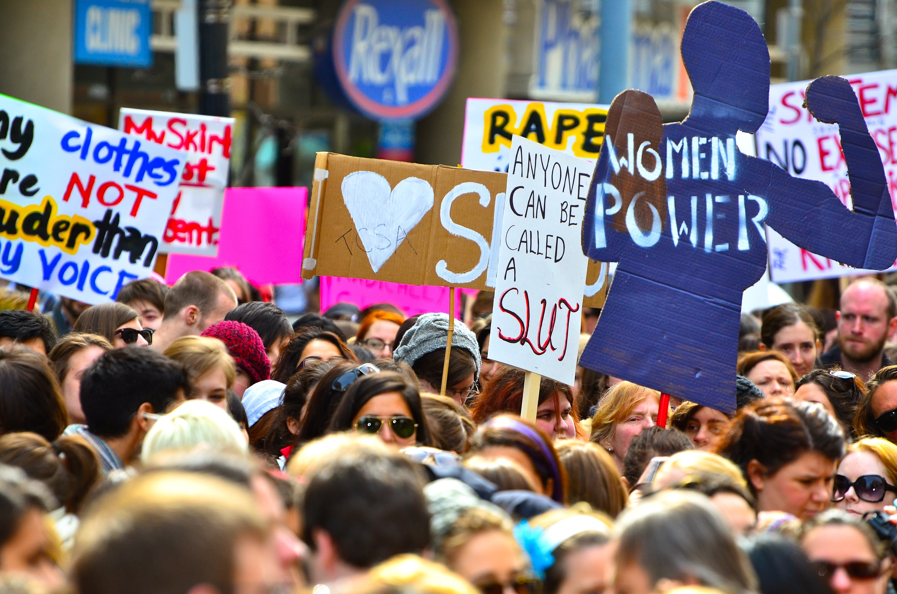

Feminism Discussion Starters

(Wikipedia)
From 2014-2015, I led a feminist discussion course at a college in southern China. I produced a number of Powerpoint presentations for these lessons, examples of which you will find below. Most slides contain only one or two questions, photos, or facts to facilitate conversation. As a man leading a class of mostly young women, I was especially mindful of limiting my own voice and encouraging student ownership of the topics at hand. My hope is that other teachers can utilize these simple materials and techniques to begin discussions about gender on their own campuses.
Presentation topics included:- What is Feminism?
- Gender Stereotypes
- Teen Girls and Gender
- Crimes Against Women
- Online Activism
- Privilege
- Men and Gender
- Portrayals in Media
- Global Feminism
- Issues in China
- Daily Feminism
 A girl in Beijing (
A girl in Beijing (Issues in China
Downloads
Extensive text is available on some slides to provide context for the teacher.